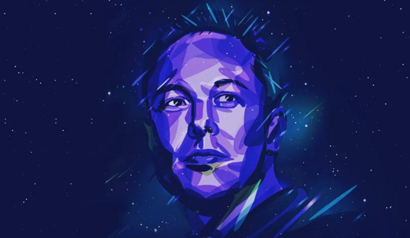

Empreendedor e inovador da tecnologia.

Elon Musk é um empresário e inventor sul-africano-canadense-americano, amplamente reconhecido por liderar empresas que
buscam transformar a tecnologia e o futuro da humanidade. Atualmente, ele é considerado a pessoa mais rica do mundo, com
uma fortuna estimada em cerca de US$ 839 bilhões em março de 2026.
1971 - Nascimento de Elon Musk
2002 - Fundação de SpaceX
2004 - Entrada na Tesla
2008 - Assumiu como CEO da Tesla
2015 - Cofundou a OpenAI (IA) e iniciou o desenvolvimento da Starlink.
2016 - Cofundou a Neuralink
2022 - Adquiriu o Twitter por US$ 44 bilhões
2025 - Patrimônio estimado acima de US$ 390 bilhões, posicionado como a pessoa mais rica do mundo.